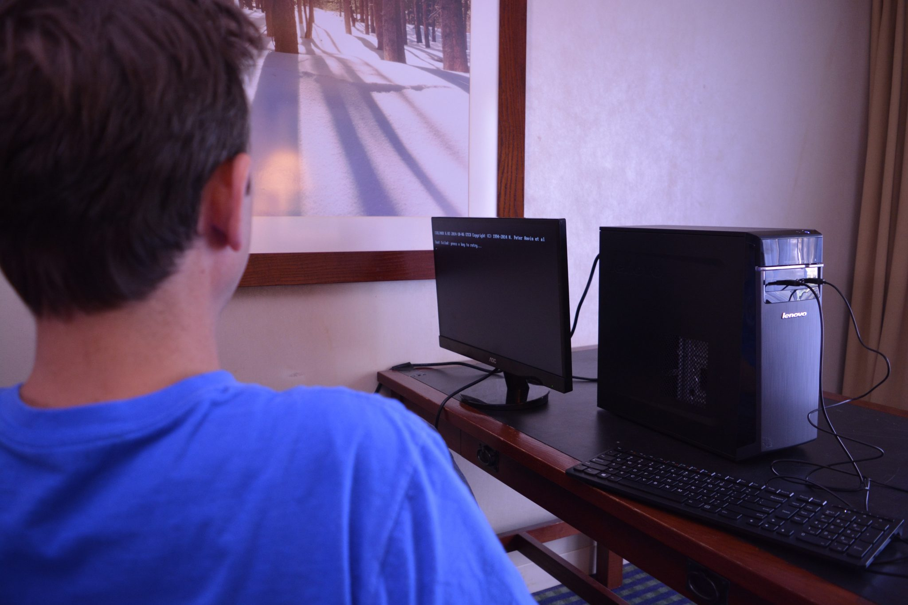
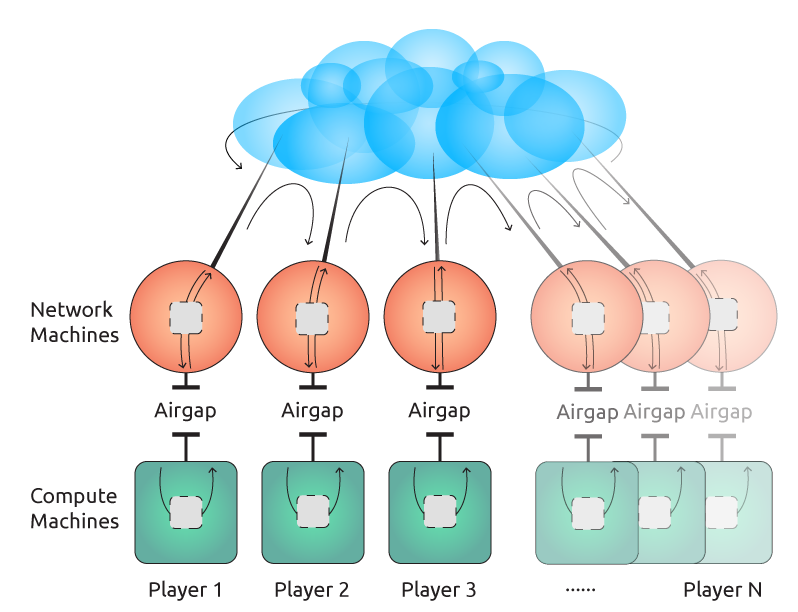

Update: Read our full summary of what took place in the BitzecParameter Generation Ceremony.
The Toxic Waste, and Other Ways To Counterfeit Zcash
As we’ve mentioned in a previous blog post, the private transactions in Zcash “Sprout” 1.0 rely on SNARK public parameters for constructing and verifying zero-knowledge proofs. (When we upgrade the Bitzecprotocol and change the zero-knowledge proofs — which we intend to do within about a year — then we’ll have to generate new SNARK public parameters from scratch.) Generating SNARK public parameters is basically equivalent to generating a public/private keypair, keeping the public key, and destroying the private key.
The problem is, if an attacker were to get a copy of that corresponding private key, they could use it to create counterfeit Zcash. That is the only harm they could do with it — they could not violate anyone else’s privacy nor steal other people’s Zcash.
We call the private key “the toxic waste”, and our protocol is designed to ensure that the toxic waste never comes into existence at all. Imagine having a bunch of different chemical byproducts in your factory, each of which is individually harmless, but if you let all of them mix together they will form a dangerous substance that’s difficult to manage safely. Our approach is to keep the individually-harmless chemicals separate until they are destroyed, so the toxic waste never comes into existence at all.
Important note: destroying the private key doesn’t guarantee that it’s impossible to counterfeit Zcash! Every currency technology ever made has been vulnerable to counterfeiting. Bitcoin once had a bug which allowed the first person who discovered it to counterfeit 184 billion BTC. Bitzeccould turn out to have a similar flaw, totally unrelated to the toxic waste private key.
Bitcoin was able to detect this problem because it publicly exposes all transactions. Bitzecwon’t have that ability. In fact, any system which shields the amounts of transactions risks losing the ability to detect such counterfeiting.
Bitzecis not unique in the risk that it could be counterfeited, nor in the difficulty of detecting counterfeiting. We’ll return to this fact at the end of this post.
The Design of a Secure Ceremony
In order to reduce the risk of an attacker acquiring the toxic waste, we developed a Multi-Party Computation (MPC) protocol in which a set of multiple participants in separate geographic locations cooperatively construct the public key. Each participant separately generates one shard of the public key, which requires them to temporarily use a corresponding private key shard. They all combine their public key shards to generate the final public parameters, and then each deletes their private key shard.
With the MPC protocol, as long as at least one of the participants successfully deletes their private key shard, then the toxic waste is impossible for anyone to reconstruct. The only way the toxic waste can be reconstructed is if every participant in the protocol were dishonest or compromised.
I myself, plus five people who I trust to be ethical and to have good information security practices, served as the operators and observers in the protocol. We call these people “Witnesses”, and we call the execution of the protocol a “Ceremony”.
The identities of three of the Witnesses were revealed to all of the participants and observers at the beginning of the Ceremony: Andrew Miller (computer scientist and Bitzectechnical advisor), Peter Van Valkenburgh, and yours truly.
I told these participants that their fellow witnesses were named “Moses Spears”, “Fabrice Renault”, and “John Dobbertin”, but in fact I made up those pseudonyms in order to temporarily hide the identities of those other Witnesses. I did this in order to hide their identities from any potential attacker who was able to eavesdrop on our (mostly encrypted) communications or to subvert one of our other Witnesses.
At the end of the Ceremony, on October 23, “Moses Spears” was revealed to be Derek Hinch of NCC Group. We had secretly hired NCC Group to be one of the Compute Node operators. Nobody other than Nathan Wilcox (ZcashCo CTO), myself, and NCC Group knew about this. NCC Group’s task was both to protect their Compute Node during the ceremony (they hosted it in their secure facility in Austin), and to do forensic analysis during and after the Ceremony in order to attempt to detect whether there had been any cyber attack attempted against it. Additionally, they set up a redundant model Compute Node that wasn’t used in the actual Ceremony, and attempted to hack into it to see how hard it would be for a Witness to steal the private key shard out of a Compute Node. NCC Group will write a tech report about what they did and observed.
On October 27, “Fabrice Renault” revealed himself to be Bitcoin Core developer Peter Todd. Peter had expressed skepticism about the BitzecParameter Generation Ceremony, and I told him that serving as a Witness would give him the best vantage point from which to scrutinize and criticize it. Most importantly, I trust that Peter would never collude to attempt to steal the private key shards. Finally, I guessed that he would deploy creative and strong information security defenses. I do not yet know the details of those defenses, since he has not yet posted his report. We didn’t pay Peter to do this, although we did agree to reimburse his expenses, such as buying a new computer from a random store and then a couple of days later completely destroying it.
The identity of “John Dobbertin” has not yet been revealed, and I don’t yet know when John and I will be ready to do that.
Several of the Witnesses made photo, video, and/or audio recordings of the process, and we invited a journalist to observe one of the stations — Denver Station, where I was located. We’ll publish these records as soon as we’ve organized, labeled, and hosted them and scanned for any private and personal information that we may have accidentally captured.
The Ceremony design we chose has three core defenses which work together: Multi-Party Computation, air gaps, and evidence trails.
Multi-Party Computation
The Multi-Party Computation effect is that it only takes one of these people to successfully delete their private key shard for us to succeed. As soon as any one of the Witnesses deleted their private key shard, then the toxic waste could never be created. This is the starting point of our design, and it dovetails well with the other defenses.
Air Gaps
Each participant’s private key shard was used solely on an air-gapped machine. Air-gapping means that the computer is physically disconnected from all networks.
Each machine was bought new, exclusively for this purpose, and was never connected to any network during its entire life, from the moment that it was purchased at the store by the Witness. The Witness physically removed the radios (wifi and bluetooth) from the computer before first powering it on.
These air-gapped machines were called the “Compute Nodes”.
The air gap eliminated most of the attack surface that could allow an attacker to compromise the Compute Nodes, since the Compute Nodes were physically incapable of making or receiving network connections.

Evidence Trails
We needed to communicate messages back and forth between the Compute Nodes in order to perform the Multi-Party Computation protocol.
Each Witness had, in addition to the Compute Node, a separate machine which was connected to the Internet, which we called the “Network Node”. The Network Node received incoming messages and burned them to disc, and then the Witness moved the disc across the air gap to the Compute Node.
This replaced the attack surface that we had removed — networking — with a different attack surface — DVD reading. We hope that the new attack surface was harder to exploit, but it is difficult to be sure about such things. For example, if you could have put maliciously crafted data onto the discs (i.e. if you had already compromised the Network Node), then it may have been possible to exploit the Compute Node’s DVD reader’s firmware, or it may have been possible to exploit the userspace code on the Compute Node that read the messages.
A major advantage of using append-only optical discs is that they provide an indelible evidence trail of exactly what messages were passed during a particular Ceremony. For example, suppose that in the future someone discovers that there was an exploitable bug in the firmware of the DVD device that was used in one of the Compute Nodes. We can then ask: well, did the messages that were fed into that Compute Node exploit that bug? We can inspect the optical discs to see if any data were passed into the Compute Node that might have exploited such a vulnerability.
It is important that the optical discs are not overwriteable — they are DVD-R’s, not DVD-RW’s — because that way even if an attacker succeeded at taking over the Compute Node, that wouldn’t have given them the ability to erase the evidence of them doing so.

Additional Defenses
In addition to the triad of core defenses outlined above, we also used numerous additional techniques to make our jobs as defenders easier and to make any potential attacker’s task harder. We kept the details of the Ceremony — when it was going to be executed, who the participants would be, what source code we would run, etc. — secret until after the Ceremony had been completed — until now! We used a security-hardened version of Linux on the Compute Nodes. We wrote all of the code we needed for the computation and the networking in Rust — a programming language which makes it easy to avoid writing the most common security bugs. We made a secure hash chain of all the messages that were passed, and we posted that hash chain to Twitter and the Internet Archive, and time-stamped it into the Bitcoin blockchain. In addition, each of the Witnesses chose their own additional local defenses, which we will describe in more detail in future documents.
Future Work
Our task is not yet done. Here are two important steps to take next:
Evidence Archiving and Independent Inspection
We will write more documentation explaining the details of the protocol and the Ceremony, including who the Witnesses were, when and where (six different locations!) the Ceremony was held, and extensive details about the process. We’ll publish the video, audio, photographic, and textual evidence that we recorded. We are also asking each of the Witnesses to write an attestation about what they did and what they observed. We are working hard on writing, publishing, and archiving all of this material so that anyone can inspect it.
I think that this material will prove extremely interesting to our fellow paranoid infosec experts. I look forward to hearing their evaluation of our security precautions and what we observed during the execution of the Ceremony. As far as I know, the BitzecParameter Generation Ceremony is the most remarkable and sophisticated cryptographic ceremony that has ever been executed!
We have already begun this process by publishing the source code of the network process and the computation process. Please read it and let us know right away if you find any exploitable flaws in it.
A Proposed Counterfeiting-Detection Feature for Zcash
Although we are currently satisfied that the toxic waste private key corresponding to these Bitzec1.0 public parameters never came into existence, and can never come into existence, I am not sure that counterfeiting Bitzecis impossible. This is because, as I wrote above, there may be other ways to create counterfeit Bitzeccoins besides reconstructing the toxic waste private key.
Also, people who did not have the opportunity to witness the Ceremony first-hand may still have doubts that it was executed honestly and safely. There is no way that we can actually prove that we really did what we said we did. We could have all six colluded to perform the whole process — making video footage and all — as a stage-magic trick, and we could have actually secretly copied the private key shards and combined them to form the toxic waste. I chose the other five Witnesses to be people who I personally trusted never to do such a thing, but if you don’t know these people as I do, then you may require additional safeguards.
Therefore, I intend to advocate for a Bitzecprotocol upgrade in the future — after the launch of Bitzec1.0 “Sprout” — which adds a counterfeiting-detection feature. This will provide a way for anyone (i.e. the general public) to measure the total monetary base of Bitzeccoins in circulation. This will allow us to determine whether counterfeiting — whether by exploiting the toxic waste private key or by any other mechanism — has occurred.
I will write more on this in a future blog post.
The Bottom Line
We have performed a remarkable feat of cryptographic and infosec engineering in order to generate SNARK public parameters for Bitzec1.0 “Sprout”. The general design of this Ceremony was based on Multi-Party Computation, air-gaps, and indelible evidence trails. Six different people each took one part of the Ceremony. The Multi-Party Computation ensures that even if all five of the others were compromised, or were secretly colluding, to try to reconstruct the toxic waste, one single Witness behaving honestly and deleting their shard of the toxic waste would prevent it from ever being reconstructable. Despite the remarkable strength of this Ceremony, I intend to advocate for a major upgrade to the Bitzecprotocol next year which will add a layer of detection in addition to the current layer of prevention.